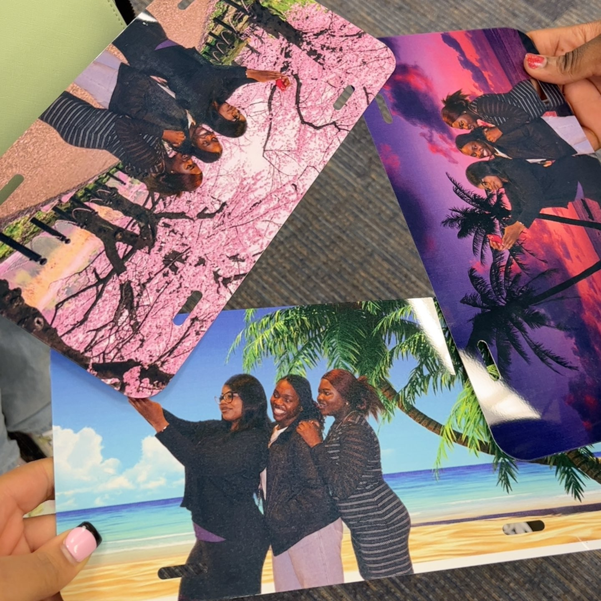
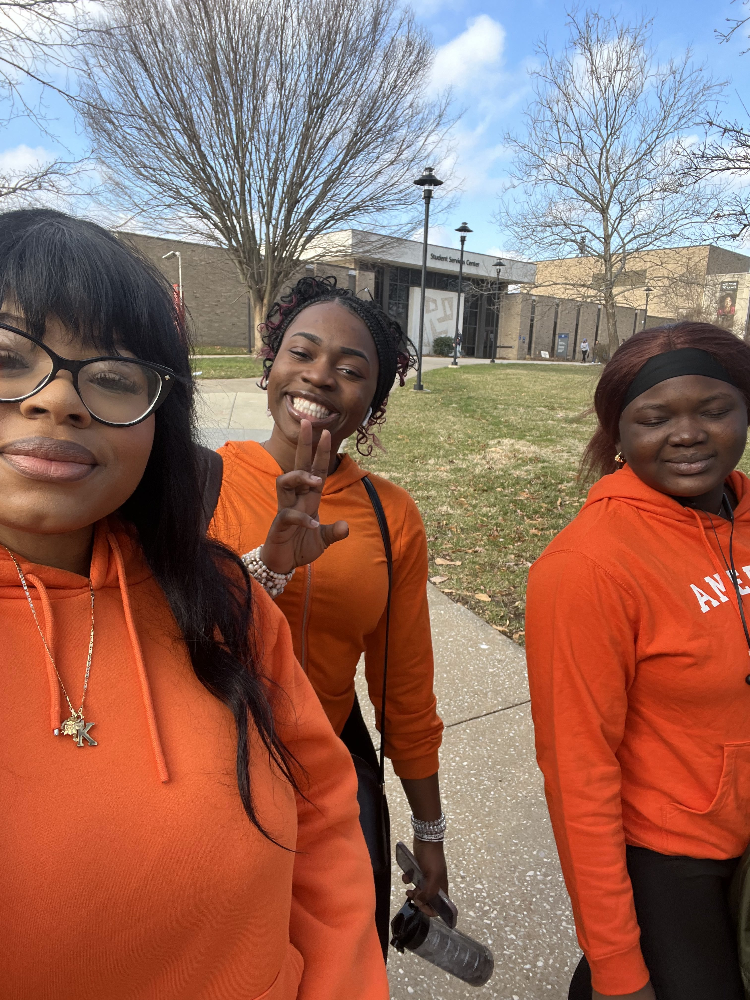
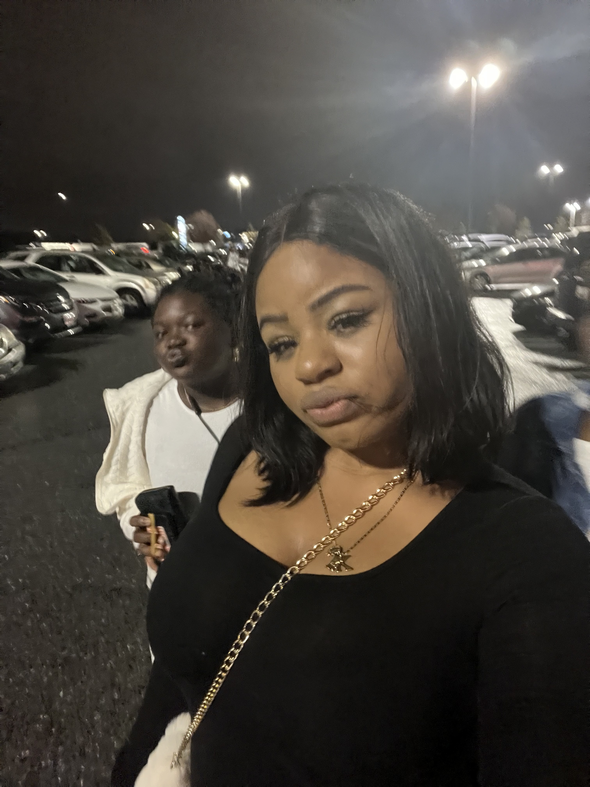
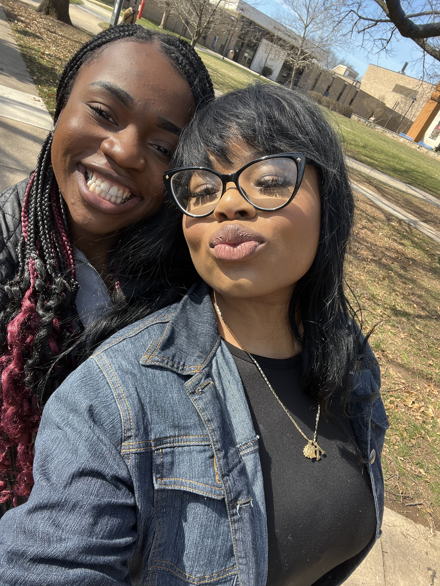

This my family, the Okokoni, Arifo & Ogudugu. I have 2 little brothers who have only 1 year apart from each other. One is 9 years old and the other one is 8 years old, then i have my little sister who is 6 years old. As you can see there is a huge gap between me and my siblings but nonetheless, we are a big family, my grandma from my mother's side live with us also. My family is very important as a elder sister and daughter i help my mom a lot. Sometimes it's overwhelming but at this point i am use to it...Nevertheless to me my 2 best friends,Gloria and Precious are family, they are my sisters , they teach me everyday the upside and downside of friendship, we went trough a lot of stuff together and supported each other, this 2 girls are the girls that taught me how to be vulnerable when i was not open emotionally, i am really glad i met them. ❣️
